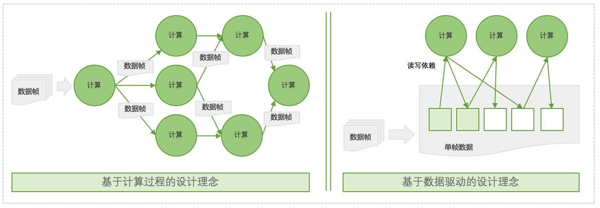

XStream用户手册¶
通过本文介绍，你可以熟悉XStream Framework开发框架的设计理念以及内部核心概念。
设计理念¶
XStream Framework，是一套基于C++实现的算法SDK编程框架。
框架通过Workflow来表示一个计算有向图：框架支持通过Json配置或Python代码两种方式来构建一个有向图。
Workflow计算拓扑图中每一个计算任务由Method来表示，它为框架核心计算组件。在智能业务中，Method通常表示一个模型推理(如检测、分类、识别等等)或者一个智能策略（如过滤策略、融合策略、优选策略等等）。在Workflow中，Method会被包装在一个Node节点对象中，由Node对象来负责Method实例创建、初始化、分配线程资源、任务分发、参数配置等。
框架提供API接口将Workflow计算拓扑加载到内存，实现Workflow的加载、执行和调度，并对外提供计算API接口。计算接口参数为待计算的数据帧。通过接口，可以将一个由InputData表示的输入数据帧通过计算拓扑计算完成以后，返回一条或多条
OutputData输出数据帧。OutputData数据中会记录该帧数据计算结果以及计算状态。
为了达到简洁，易用，高效的设计目标，XStream Framework采用了一种数据驱动理念来进行设计。相比与另一种面向计算过程任务流实现方式，数据驱动设计理念不强调任务流中两个计算节点之间的数据流向，不关心任务流中两节点间数据交换和调度过程，而是通过数据是否可用等数据驱动的方式来对每个计算节点进行独立调度。
下图是两种设计理念的架构图：

其中采用数据驱动的设计理念，可以获得以下收益：
简化数据流配置：基于数据驱动的Workflow拓扑图配置，我们不需要关系拓扑中两个计算节点之间的强链路依赖关系，而只需关心整个Workflow的输入输出数据内容以及每个计算节点数据输入输出内容。这对于一些复杂的数据流场景，可以极大简化workflow设计代价。同时我们可以非常灵活的在拓扑加入新的”专家知识”计算节点来对数据进行加工，持续强化workflow功能。
高效的内存使用：数据驱动设计方案关注的是数据字段有效性和可用性，框架可以根据数据依赖关系决定单帧数据内部分字段的有效性，在合适时机将无效数据进行内存回收。相比面向计算过程设计思路，可以极大缩短无效字段数据的生命周期，提高内存的利用效率。
高效的调度效率:相比面向计算过程的设计思路,数据驱动在保持计算调度策略简洁的情况下，可以实现极高的调度效率。
XStream除了支持客户完成自定义Method开发、Workflow配置和算法SDK开发之外，还内置了大量可复用的算法Method和策略Method，支持客户更快完成的场景应用逻辑，详细参见XStream模型与策略开发。
基本概念¶
Workflow：将一些计算任务级联在一起构建的有向无环图，它定义了一种工作范式。如人脸检测、跟踪、属性（人脸朝向、人脸清晰度等）以及优选策略等计算任务级联在一起定义了一个人脸抓拍范式。
Method：框架核心计算组件，在智能业务中Method通常表示一个模型推理(如检测、分类、识别等等)或者一个智能策略（如过滤策略、融合策略、优选策略等等）;
Node：为Workflow计算图中一个计算节点，负责method实例创建、分配线程资源、任务分发、参数配置等。每个Node管理了一个或多个method实例。
Slot：每个node的输入或者输出端口。
Data：Workflow中的每个node之间流转的数据表示，数据表现为一帧一帧，每帧会分配一个唯一单调递增的sequence_id。其中InputData为workflow的输入数据，OutputData为workflow输出数据。
Param：Param为一个配置信息，它可以是一个json字符串，也可以是一个普通字符串，支持在框架以及自定义Method实现中进行解析。
基础数据结构¶
基于数据驱动的框架设计，其中最为重要的部分是数据表示，它包括数据帧的表示以及数据帧内每个字段的表示。在数据驱动设计下，数据帧中的每个字段需要有一定的机制来标识数据状态，比如有效，无效，不可见等，进而可以利用这些状态来实现调度。
在XStream中，通过BaseData，BaseDataVector,XStreamData,InputData,OutputData，InputParam等基础数据类型来表示数据和配置参数。
1. BaseData¶
Workflow中的每个node之间流转的数据都是从BaseData继承而来，它定义如下：
namespace xstream {
struct BaseData {
BaseData();
virtual ~BaseData();
std::string type_ = "";// 类型
std::string name_ = "";// 名称
int error_code_ = 0;// 错误码
std::string error_detail_ = "";// 错误信息
std::shared_ptr<CContext> c_data_;// C数据结构上下文
DataState state_ = DataState::VALID;// 状态
};
enum class DataState {
VALID = 0,// 有效
FILTERED = 1,// 被过滤掉
INVISIBLE = 2,// 不可见
DISAPPEARED = 3,// 消失
INVALID = 4, // 无效
};
// 还预定义了数组和从普通数据类型快速转化为XStream数据表示的模板：
struct BaseDataVector : public BaseData {
BaseDataVector();
std::vector<BaseDataPtr> datas_;
};
// 类模板，value可以为任意类型的数据
template<typename Dtype>
struct XStreamData : public BaseData {
Dtype value;
XStreamData() {}
explicit XStreamData(const Dtype& val) {
value = val;
}
};
实例：将一个BBox数据结构包装为可以输入到XStream中数据表示。
template <typename Dtype>
struct BBox_ {
Dtype x1 = 0;
Dtype y1 = 0;
Dtype x2 = 0;
Dtype y2 = 0;
}
typedef XStreamData<BBox_> BBox;
2. InputParam¶
InputParam定义了内置执行参数的基类，用户可以继承基类实现自定义参数类.它
class InputParam {
public:
explicit InputParam(const std::string &unique_name) {
unique_name_ = unique_name;
is_json_format_ = false;
is_enable_this_method_ = true;
}
virtual ~InputParam() = default;
virtual std::string Format() = 0;
public:
bool is_json_format_;
bool is_enable_this_method_;
std::string unique_name_;
};
typedef std::shared_ptr<InputParam> InputParamPtr;
3. InputData¶
InputData定义了workflow的输入数据，整体结构表现为一帧一帧的数据流。
// 输入数据类型
struct InputData {
// 用户输入的数据，比如图片、channel、框等等
std::vector<BaseDataPtr> datas_;
// 当前请求自定义的参数
std::vector<InputParamPtr> params_;
// 数据源 id 用于多路输入时区分输入源,单一源情况赋值为 0
uint32_t source_id_ = 0;
// 透传的数据，该数据会透传到OutputData::context_ 字段
const void *context_ = nullptr;
};
4. OutputData¶
OutputData定义了workflow的输出数据，整体结构表现为一帧一帧的数据流。
// 输出数据类型
struct OutputData {
int error_code_ = 0;// 错误码
std::string error_detail_ = "";// 错误信息
// 当该OutputData为给某个Method的定向回调结果时，该字段用于指示Method名称
std::string unique_name_ = "";
std::string output_type_ = "";// 多路输出结果名称
std::vector<BaseDataPtr> datas_;// 输出结果
const void *context_ = nullptr;// 从InputData透传过来的数据
int64_t sequence_id_ = 0;// 该结果的序列号
uint32_t source_id_ = 0;// 该结果是属于那个输入源产生的结果
uint64_t global_sequence_id_ = 0;
};
typedef std::shared_ptr<OutputData> OutputDataPtr;
error_code_等字段记录了该数据在处理过程中是否成功信息。
XStream SDK创建¶
XStream Framework主要功能是支持用户自定义Method计算任务，配置计算Workflow拓扑图以及将拓扑图转化为一个算法SDK。
在详细讲解前面两点之前，我们先站在workflow之上，来看看如何将拓扑图转化为算法SDK，从而通过用户接口可以更好来认识的XStream Framework。
1. XStream SDK接口¶
namespace xstream {
/**
* 典型使用
* xstream::XStreamSDK *flow = xstream::XStreamSDK::CreateSDK();
* flow->SetConfig("config_file", config);
* flow->Init();
* InputDataPtr inputdata(new InputData());
* // ... 构造输入数据
* auto out = flow->SyncPredict(inputdata);
* // PrintOut(out);
* // ... 处理输出结果
* delete flow;
*/
// 数据流提供的接口
class XStreamSDK {
public:
// 因为构造出来的实例是XStreamSDK接口的子类
virtual ~XStreamSDK() {}
// 通过此方法构造SDK实例
static XStreamSDK *CreateSDK();
//说明：用于设置整个workflow的配置，目前支持的功能有：
//1）key为"config_file"，value设置为workflow的配置路径，它定义整个workflow数据流。
//2）key为"profiler"，value为"on"，表示打开性能统计功能。"off"表示关闭, 默认为关闭。
//3）key为"profiler_file",value为性能统计输出文件路径，用于设置性能统计文件的路径名称，默认为./profiler.txt
//4）key为"free_framedata", value为"on", 表示尽早地释放掉在后面node节点中不再需要使用的Framework Data中的某项数据。
//打开此项配置,可以减少峰值内存使用。"off"表示关闭, 默认为关闭。
virtual int SetConfig(const std::string &key, const std::string &value) = 0;
//用于初始化xstream句柄，必须在调用SetConfig之后执行Init()
virtual int Init() = 0;
// 用于设置node的参数，最终会通过调用对应的node管理的method实例的UpdateParameter(InputParamPtr ptr)接口，完成参数的更新。
// 形参unique_name传入node的名字；形参ptr为该node对应的配置信息
virtual int UpdateConfig(const std::string &unique_name, InputParamPtr ptr) = 0;
//获取某个node的参数，最终会调用对应的node管理的method实例的GetParameter()返回配置信息。
virtual InputParamPtr GetConfig(const std::string &unique_name) const = 0;
// 获取node对应method的版本信息。
virtual std::string GetVersion(const std::string &unique_name) const = 0;
// 同步运行接口，传⼊数据，接口会阻塞住，直到整个workflow处理完成，将workflow的结果通过函数返回值返回为止。
// 该接口需要在Init()之后执行才有效。
virtual OutputDataPtr SyncPredict(InputDataPtr input) = 0;
// 同步多路输出的场景下， 输出接口可以通过output_type_信息判断输出类型。
virtual OutputDataPtr SyncPredict2(InputDataPtr input) = 0;
// 使用异步运行接口时，设置SetCallback才有效。
// 将name设置为默认值，通过该接口可以设置整个workflow处理完成后的回调函数；
// 将name设置为某个node的unique名字，通过该接口可以设置该node处理数据完成后的回调函数。
virtual int SetCallback(XStreamCallback callback, const std::string &name = "") = 0;
// 异步运行接口，结果通过SetCallback设置的回调函数捕获。AsyncPredict接口调用后立即返回。
// 该接口需要在Init()之后执行才有效。
virtual int64_t AsyncPredict(InputDataPtr input) = 0;
};
XStreamSDK核心功能是将一个Workflow配置转化为算法SDK：
XStreamSDK实例创建：当前单进程只支持创建单个SDK实例。并且由于XStreamSDK内部调度目标是最大化利用BPU芯片资源，因此当前版本不建议跨进程运行多个XStream SDK实例。
XStreamSDk实例配置：其中最重要是
config_file，它即为Workflow配置。同时也支持通过UpdateConfig和GetConfig来动态获取和修改Workflow中各个配置。XStreamSDk实例初始化：即
Init过程，它基于config_file定义的Workflow配置，完成计算拓扑的构建和初始化。XStreamSDk预测接口：针对一个InputData数据进行计算，返回一个OutputData数据。当前支持同步计算和异步回调两种模式。
2. XStream SDK使用¶
同步运行模式：通过SyncPredict函数堵塞进行调用。
实例代码如下:
// xstream/tutorials/stage1/sync_main.cc
using xstream::BaseData;
using xstream::BaseDataPtr;
using xstream::BaseDataVector;
using xstream::InputData;
using xstream::InputDataPtr;
auto config = argv[1];
xstream::XStreamSDK *flow = xstream::XStreamSDK::CreateSDK();
flow->SetConfig("config_file", config);
flow->Init();
/// Get Method Version
std::cout << "BBoxFilter_A Method Version : "
<< flow->GetVersion("BBoxFilter_A") << std::endl;
float x1{0}; // BBox(框)的左上角横坐标
float y1{20}; // BBox(框)的左上角纵坐标
float x2{0}; // BBox(框)的右上角横坐标
float y2{50}; // BBox(框)的右上角纵坐标
// 框的面积计算公式:(x2-x2)*(y2-y1)
// 生成面积为{ 0, 30, 60, 90, 120, 150, 180, 210, 240,
// 270 } 序列,作为BBoxFilter的输入数据
for (int i = 0; i < 10; i++) {
x2 = i;
InputDataPtr inputdata(new InputData());
BaseDataVector *data(new BaseDataVector);
xstream::BBox *bbox(
new xstream::BBox(hobot::vision::BBox(x1, y1, x2, y2)));
bbox->type_ = "BBox";
data->datas_.push_back(BaseDataPtr(bbox));
data->name_ = "in_bbox";
inputdata->datas_.push_back(BaseDataPtr(data));
auto out = flow->SyncPredict(inputdata);
ParseOutput(out);
}
delete flow;
异步运行模式：通过SetCallback设置回掉函数，实现AsyncPredict非堵塞调用。
实例代码所示:
// xstream/tutorials/stage1/async_main.cc
using xstream::BaseData;
using xstream::BaseDataPtr;
using xstream::BaseDataVector;
using xstream::InputData;
using xstream::InputDataPtr;
using Stage1Async::Callback;
auto config = argv[1];
xstream::XStreamSDK *flow = xstream::XStreamSDK::CreateSDK();
Callback callback;
// 整个Workflow回调函数
flow->SetCallback(
std::bind(&Callback::OnCallback, &callback, std::placeholders::_1));
flow->SetConfig("config_file", config);
flow->Init();
// BBoxFilter_A回调函数
flow->SetCallback(
std::bind(&Callback::OnCallback, &callback, std::placeholders::_1),
"BBoxFilter_A");
// BBoxFilter_B回调函数
flow->SetCallback(
std::bind(&Callback::OnCallback, &callback, std::placeholders::_1),
"BBoxFilter_B");
float x1{0}; // BBox(框)的左上角横坐标
float y1{20}; // BBox(框)的左上角纵坐标
float x2{0}; // BBox(框)的右上角横坐标
float y2{50}; // BBox(框)的右上角纵坐标
// 框的面积计算公式:(x2-x2)*(y2-y1)
// 生成面积为{ 0, 30, 60, 90, 120, 150, 180, 210, 240,
// 270 } 序列,作为BBoxFilter的输入数据
for (int i = 0; i < 10; i++) {
x2 = i;
InputDataPtr inputdata(new InputData());
BaseDataVector *data(new BaseDataVector);
xstream::BBox *bbox(
new xstream::BBox(hobot::vision::BBox(x1, y1, x2, y2)));
bbox->type_ = "BBox";
data->datas_.push_back(BaseDataPtr(bbox));
data->name_ = "in_bbox";
inputdata->datas_.push_back(BaseDataPtr(data));
auto out = flow->AsyncPredict(inputdata);
// waiting for async function done
std::this_thread::sleep_for(std::chrono::milliseconds(10));
}
std::this_thread::sleep_for(std::chrono::milliseconds(1000));
delete flow;
Method实现¶
Method是框架中核心计算组件，在智能业务中Method通常表示一个模型推理(如检测、分类、识别等等)或者一个智能策略（如过滤策略、融合策略、优选策略等等）。但是XStream Framework框架本身，Method是不区分模型推理或智能策略，我们开放接口支持客户定义任意计算逻辑。
1. Method定义¶
下面是Method的接口类：
namespace xstream {
class Method {
public:
virtual ~Method();
/// 初始化
virtual int Init(const std::string &config_file_path) = 0;
virtual int Init(const Json::Value &config) { return -1; }
/// 获取Method运行参数配置
virtual InputParamPtr GetParameter() const = 0;
// 动态改变Method运行参数配置
virtual int UpdateParameter(InputParamPtr ptr) = 0;
/// 获取Method版本号，比如 metric_v0.4.0 或者 MD112 等
virtual std::string GetVersion() const = 0;
/// 获取Method基本信息
virtual MethodInfo GetMethodInfo();
/// 用于告知Method整个SDK的Profiler状态更改
virtual void OnProfilerChanged(bool on) = 0;
// 数据处理函数，第一个参数是输入数据（双重vector，外层vector表示batch是多帧的输入
// 内层的vector表示单帧的数据列表），
// 内层vector对应workflow的"inputs"输入列表
virtual std::vector<std::vector<BaseDataPtr>> DoProcess(
const std::vector<std::vector<BaseDataPtr>> &input,
const std::vector<InputParamPtr> ¶m) = 0;
/// 析构
virtual void Finalize() = 0;
};
typedef std::shared_ptr<Method> MethodPtr;
} // namespace xstream
初始化：Method初始化支持读取一个配置文件进行初始化或一个配置字符串进行初始化，在Workflow构建时候，会做相应的配置，详细参见Workflow构建
资源回收：Method作为计算组件，初始化过程中会申请占用一些计算资源和存储资源，在SDK退出时，需要严格对申请资源进行回收，避免资源泄漏。
参数更新: 除了初始化设置Method参数，框架也支持通过
XStreamSDK::UpdateConfig接口在运行时动态调整Method内部的参数。MethodInfo: 定义了Method属性信息，详细参见Method属性
计算接口：
DoProcess定义了Method实际计算逻辑。函数输入
input和函数返回值都是按照Batch方式进行数据帧处理，BatchNum=1时即为单帧数据处理，通过该设计来满足一些需要Batch计算的场景需求。输入参数
input的每个Batch数据类型为std::vector<BaseDataPtr>。在数据驱动调度方式中，框架会根据workflow Node定义传递相应字段数据到函数中，而非帧数据的全部字段。函数返回值的每个Batch数据类型也为
std::vector<BaseDataPtr>。框架会根据workflow Node定义字段，将会返回值写回到相应帧中。因此需要保证返回值帧字段个数与配置个数一致。参考下面Methode Node定义实例：每个数据帧输入字段数目为1个
image,输出的字段数目为3个，分别是rgb_face_box,rgb_lmk,rgb_pose。
{ "method_type": "FasterRCNNMethod", "inputs": [ "image" ], "outputs": [ "rgb_face_box", "rgb_lmk", "rgb_pose" ], "method_config_file": "face_pose_lmk.json" },
2. Method属性¶
自定义Method，可以通过实现virtual MethodInfo GetMethodInfo();函数来对Method的一些属性进行配置。
MethidInfo定义如下：
struct MethodInfo {
// 是否线程安全
bool is_thread_safe_ = false;
// 是否需要做reorder，也就是让每一帧结果的返回顺序同请求顺序。
bool is_need_reorder = false;
// 是否对输入源有前后文依赖 source context dependent
bool is_src_ctx_dept = false;
};
其中is_thread_safe_和is_need_reorder两个属性最为重要：
属性is_thread_safe_定义了Method是否为线程安全。在Workflow定义时候，支持配置Node的线程数。如果线程数配置大于1，此时要求Method计算过程的实现，需要满足线程安全的要求。默认值是false，在需要配置Method多实例并发时，需要设置该属性为True。
属性is_need_reorder定义了是否要求数据按顺逐帧调用Method计算函数。比如一些目标跟踪场景，要求输出数据是有序的。默认是false，表示为不要求有序。
注意：在is_reorder=true的method，由于有前后帧序依赖，线程数只允许为1。同时is_reorder会一定程度上降低Method执行效率。
Workflow构建¶
Workflow定义了整个计算拓扑结构，XStream SDK支持读取Workflow配置文件来在构建一个算法SDK。文件内容为一个json字符串，它定义了一个完整的workflow拓扑结构。
1. Workflow骨架结构¶
下面是一个workflow配置示例
{
"name": "workflow",
"type": "workflow",
"inputs": ["face_head_box"],
"outputs": ["face_head_box_filter2"],
"workflow": [
{
"thread_count": 3,
"method_type": "BBoxFilter",
"unique_name": "BBoxFilter_1",
"inputs": [
"face_head_box"
],
"outputs": [
"face_head_box_filter"
],
"method_config_file": "null"
},
{
"thread_count": 3,
"method_type": "BBoxFilter",
"unique_name": "BBoxFilter_2",
"inputs": [
"face_head_box_filter"
],
"outputs": [
"face_head_box_filter2"
],
"method_config_file": "null"
}
]
}
它的骨干结构如下：
{
"name": "xxx", // workflow名称，需唯一化
"type": "workflow", // 表示Workflow对象
"inputs": [], // 输入slots名称
"outputs": [], // 输出slots名称
"workflow": [ // Workflow内容，包括Node或Workflow对象(子workflow)
]
}
name定义了Workflow名称，默认可以省略，内部会自定生成一个唯一名称。inputs/outputs定义了workflow整个有效输入输出名称。workflow定义了整个拓扑的结构，它由多个Node或Workflow对象(子workflow)组成。Node之间通过inputs和outputs字段来构建起数据依赖。
2. inputs/outputs定义¶
对于XStream SDK的virtual OutputDataPtr SyncPredict(InputDataPtr input) = 0;函数，InputDataPtr定义了整个workflow的输入数据，OutputDataPtr定义了整个workflow的输出数据。
workflows的inputs数据字段名称需要与InputDataPtr的数据字段对应，在基于数据驱动框架中，如果InputDataPtr中字段缺失，可能会导致该帧数据无法被处理。
workflow在计算过程中，一些中间Method可能会产生一些中间字段，这些中间字段可能也会成为其他中间Method的输入，但是可以不是整个Workflow的输出。
3. Node定义¶
Node是一个计算单元，它包装了Method的配置与定义，它的骨干结构如下：
{
"type": "node", // 表示Node对象
"method_type": "TestMethod", // Method类型，需要实现该Method
"unique_name": "method", // Node名称，唯一性标志
"thread_count": 3,
"inputs": ["global_in"], // 输入slots
"outputs": ["global_out"], // 输出slots
"method_config_file": "face_pose_lmk.json" // Method配置文件
// ...
}
type=node表示当前节点是一个Method类型单一Node节点。用于区分type=workflow子workflow类型节点，详细参见子workflow定义。method_type当前Node所使用的Method名称，Node初始化时，会通过一个工厂类来实现method_type到MethodInstance对象实例的初始化。实例工厂类如下所示：
namespace xstream { MethodPtr MethodFactory::CreateMethod(const std::string &method_name) { if ("MOTMethod" == method_name) { return MethodPtr(new MOTMethod()); } else if ("FasterRCNNMethod" == method_name) { return MethodPtr(new FasterRCNNMethod()); } else if ("GradingMethod" == method_name) { return MethodPtr(new GradingMethod()); } else if ("SnapShotMethod" == method_name) { return MethodPtr(new SnapShotMethod()); } else { return MethodPtr(); } } }
unique_name用于唯一标识一个MethodInstance对象实例。thread_count配置Node并发副本数目，如果Method是线程安全的，可以通过设置线程数目来提高计算并发能力。inputs/outputs定义了Method的输入输出名称。method_config_file配置文件，在Method init初始化时候，会将路径传递给Method，Method内部负责读取文件并完成Method的初始化。
除此之外，针对Method类型单Node节点，还可以配置线程调度相关参数，详细参考Workflow调度
4. 子workflow定义¶
在一些复杂的业务场景中，我们可以将一个Node表示为一个Workflow，通过子Workflow的功能来实现Workflow嵌套。详细参见子workflow定义
5. 基于Python来构建Workflow配置文件¶
在一些复杂的业务场景中，json文件本身较为复杂，当前在缺乏可视化拖拉拽方式时候，我们也提供一个基于python脚本来构建workflow的工具，简化workflow json配置，提高workflow可复用率。详细参见Python-Workflow构建